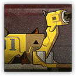
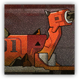
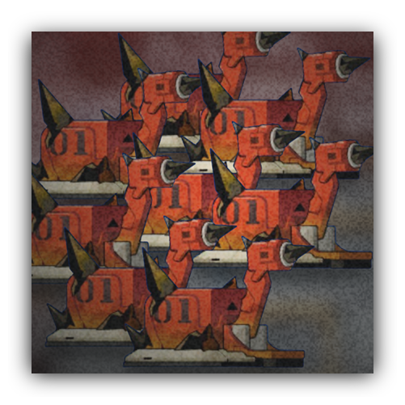

迷茫的修理小助手 Befuddled Repair Assistant
近战 物理；普通 源石造物
|
 |
罗德岛工程机械单元。被源石干扰了寻路模块的修理小助手，连工程部干员特意添加的送餐功能都很难实现了。 “你说维护功能？我们的工程师够多了。至于华法琳提出的食品安全警告，我们正在努力改进。” |
修理小助手丨Befuddled Repair Assistant
小型构装（源石造物），混乱中立
| AC 14 | 先攻 +4（14） |
| HP 19（3d6+9） | |
| 速度 40 尺 | |
| 调整 | 豁免 | 调整 | 豁免 | 调整 | 豁免 | |||||||||
|---|---|---|---|---|---|---|---|---|---|---|---|---|---|---|
| 力量 | 11 | +0 | +0 | 敏捷 | 15 | +2 | +4 | 体质 | 16 | +3 | +3 | |||
| 智力 | 4 | -3 | -1 | 感知 | 12 | +1 | +1 | 魅力 | 8 | -1 | -1 |
| 抗性 闪电 |
| 免疫 毒素，心灵；目盲，耳聋，力竭，麻痹，石化，中毒 |
| 感官 黑暗视觉60尺，被动察觉12 |
| 语言 理解通用语但不能说 |
| CR 1/4（XP 200；PB +2） |
特质 Traits
集群战术 Pack Tactics。若修理小助手的攻击目标生物周围5尺范围内存在有至少一个未失能的盟友，则修理小助手对该生物进行的攻击检定具有优势。
动作 Actions
钻头冲击 Impact。近战攻击检定：+4，触及5尺。命中：5（1d6+2）挥砍伤害。
失控的修理小助手 Uncontrollable Repair Assistant
近战 物理；普通 源石造物
|
 |
罗德岛工程机械单元。被源石干扰了威胁识别模块的修理小助手，连工程部干员精心设计的小功率带安全离合的钻头都变得更危险了。 “你说功率？比起复杂作业，显然是确保干员工作环境的安全性并为其提供足够的情绪支持更加重要！” |
失控的修理小助手丨Uncontrollable Repair Assistant
小型构装（源石造物），混乱中立
| AC 14 | 先攻 +7（17） |
| HP 32（5d6+15） | |
| 速度 40 尺 | |
| 调整 | 豁免 | 调整 | 豁免 | 调整 | 豁免 | |||||||||
|---|---|---|---|---|---|---|---|---|---|---|---|---|---|---|
| 力量 | 12 | +1 | +1 | 敏捷 | 17 | +3 | +5 | 体质 | 16 | +3 | +3 | |||
| 智力 | 5 | -3 | -1 | 感知 | 14 | +2 | +2 | 魅力 | 8 | -1 | -1 |
| 抗性 闪电 |
| 免疫 毒素，心灵；目盲，耳聋，力竭，麻痹，石化，中毒 |
| 感官 黑暗视觉60尺，被动察觉12 |
| 语言 理解通用语但不能说 |
| CR 1/2（XP 200；PB +2） |
特质 Traits
集群战术 Pack Tactics。若修理小助手的攻击目标生物周围5尺范围内存在有至少一个未失能的盟友，则修理小助手对该生物进行的攻击检定具有优势。
动作 Actions
钻头冲击 Impact。近战攻击检定：+5，触及5尺。命中：8（1d10+3）穿刺伤害。
失控小助手集群 Swarm of Uncontrollable Assistants
近战 物理；普通 集群 源石造物
|
 |
罗德岛工程机械单元。在PRTS失去控制之后，这些工程机械单元开始暴走！现在有一大群失控的小助手正在蜂拥而来！ |
失控小助手集群丨Swarm of Uncontrollable Assistants
小型构装的大型集群（源石造物），无阵营
| AC 14 | 先攻 +6（16） |
| HP 133（14d10+56） | |
| 速度 40 尺 | |
| 调整 | 豁免 | 调整 | 豁免 | 调整 | 豁免 | |||||||||
|---|---|---|---|---|---|---|---|---|---|---|---|---|---|---|
| 力量 | 12 | +1 | +4 | 敏捷 | 17 | +3 | +3 | 体质 | 18 | +4 | +4 | |||
| 智力 | 5 | -3 | +0 | 感知 | 14 | +2 | +2 | 魅力 | 8 | -1 | -1 |
| 抗性 闪电，钝击，穿刺，挥砍 |
| 免疫 毒素，心灵；所有状态 |
| 感官 黑暗视觉60尺，被动察觉12 |
| 语言 无 |
| CR 5（XP 1,800；PB+3） |
特质 Traits
集群战术 Pack Tactics。若修理小助手的攻击目标生物周围5尺范围内存在有至少一个未失能的盟友，则修理小助手对该生物进行的攻击检定具有优势。
集群 Swarm。小助手集群可以进驻另一生物身处的空间，反之亦然。而且小助手集群可以通过任何足够一只小型生物通过的通道。小助手集群不能恢复生命值也不能获得临时生命值。
动作 Actions
多重攻击 Multiattack。小助手集群发动两次钻头冲击攻击
钻头冲击 Impact。近战攻击检定：+6，触及5尺。命中：13（4d4+3）穿刺伤害。若小助手集群处于浴血则改为8（3d4+3）穿刺伤害。